Climate-Shield® Produkte
Alle Produkte im Überblick
Dachbeschichtung
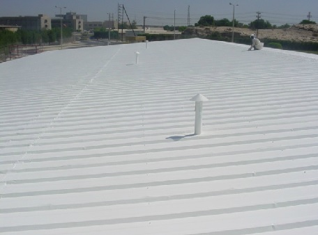
Climate-Shield® Dachbeschichtungen sind hocheffiziente, energiesparende und flexible Beschichtungen, gemacht
aus einem wasserbasierten Acryl-Harz-System. Nach dem Auftragen bildet sich eine thermisch effiziente Decke. Diese verhindert das Eindringen von Wärme an heissen Sommertagen, indem sie die Oberfläche vor UV-Strahlen schützt und diese wieder reflektieren.
Aussenwandbeschichtungen
Aussenwand-Beschichtungen
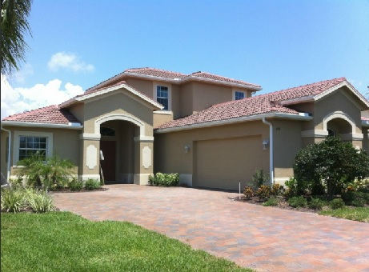
Climate-Shield® Aussenwandbeschichtungen sind sehr effiziente, energiesparende und biegsame Beschichtungen, welche für Wärme- und Wasserisolation von Aussenwänden entworfen wurden. Die Beschichtungen müssen nicht wieder innert kurzer Zeit aufgetragen werden, denn sie halten mehrmals so lange wie gewöhnliche Farben. Sie haben ausserordentliche Wasserdichte, Feuerfestigkeit sowie Schutz gegen UV-Strahlen und Wärme.
Innenwandbeschichtungen
Innenwand-Beschichtungen
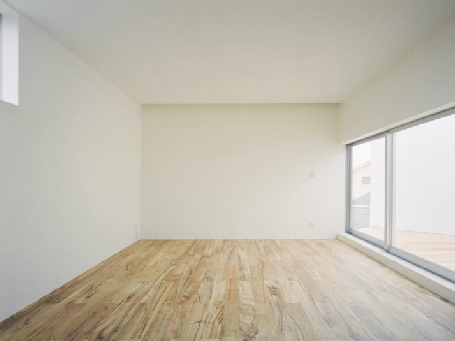
Climate-Shield® Innenwandbeschichtungen sind sehr effiziente, energiesparende und biegsame Beschichtungen, welche für Wärme- und Wasserisolation von Innenwänden entworfen wurden. Sie haben ausserordentliche isolations Eigenschaften, welche verhindern, dass Wärme an kalten Tagen aus dem Inneren verloren geht oder an heissen Tagen ins Innere gelangt. Ausserdem verringert diese Beschichtung die Lärmübertragung und sorgt für verringerte Lärmbelästigung.
Metalgrundierung
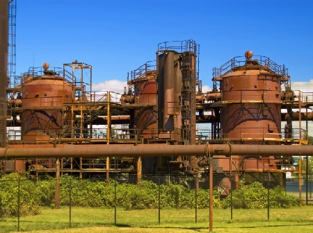
Climate-Shield® Metalgrundierung wird als Grundierung auf allen rostigen Metaltanks oder Pipelines, Wassertanks, Silos, Aufbewahrungsbehälter, Metaldächer, Metalstreben und anderen Metalloberflächen vor dem Auftragen von Climate-Shield® Dachbeschichtung oder Climate-Shield® Tankbeschichtung verwendet.
Stuckschild
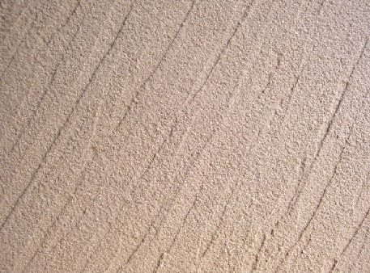
Climate-Shield® Stuckschild inst eine wasserbasierte Schutzbeschichtung, welche anstelle von konventioneller Farbe verwendet werden kann. Diese einzigartige Beschichtng kann sehr schnell aufgetragen werden, aber obwohl sie viel weniger Arbeit benötigt, bietet sie einen sehr beständigen und effektiven Wärmemeschutz. Die Beschichtung bietet grosse Wärmereflexion, welche das Aufheizen der Oberfläche verhindert.
Tankbeschichtungen
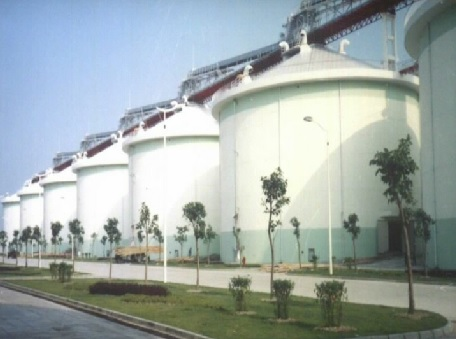
Climate-Shield® Tankbeschichtungen sind äusserst effiziente, energiesparende und elastische Beschichtungen, welche speziell entwichekt wurden um Aufbewahrungscontainer zu schützen und deren Aussenwandtemperatur niedrig zu halten. Die auf wasserbasis entwickelte Beschichtung ist nicht giftig und sehr umweltfreundlich. Sie ist komplett waschbar und kann sogar starken Chemikalien wiederstehen. Ausserdem ist die Tankbeschichtung komplett feuerfest, Klasse A nach UL Standarts.
Holz- und Deckbeschichtungen
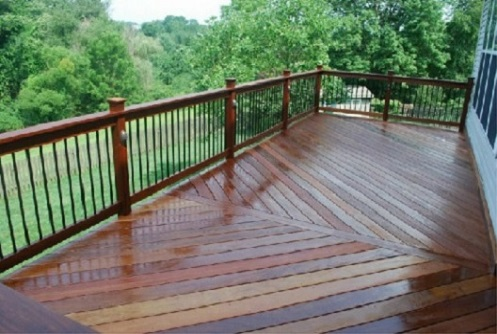
Climate-Shield® Holz- und Deckbeschichtung ist eine aussenordentliche Beschichtung, welche sehr hochen Schutz vor UV-Strahlen und Feuchtigkeit bietet. Eine Schutzbeschichtung für Holz ist sehr wichtig, denn Feuchtigkeit kann tief in das Holz eindringen und dieses anschwellen.
Acryllic Flex Tac
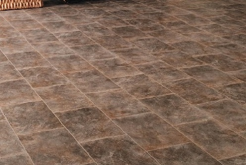
Climate-Shield® Acryl Flex Tac ist eine Bechichtung, welche auf Bitumenoberflächen verwended wird, bevor man Climate-Shield® Dach- oder Wandbeschitungen verwendet.
Klarlacke
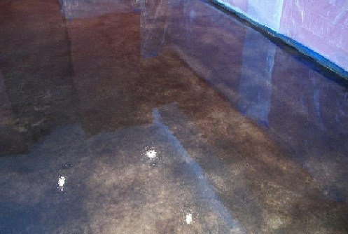
Climate-Shield® Klarlack wurde speziell dazu entwickelt um als eine durchdringende Versiegelung für den Einsatz auf verschiedensten Oberflächen entwickelt.
Ausserdem wird Climate-Shield® Klarlack auch dazu verwendet um Climate-Shield Dachbeschichtungen, Aussenwandbeschichtungen, Stuckschild und Tankschild einen glänzenden Finish zu verleihen oder um zusätzlichen Schutz gegen Abgasflecken auf weissen Climate-Shield® Produkten zu bieten.
Rostkonverter
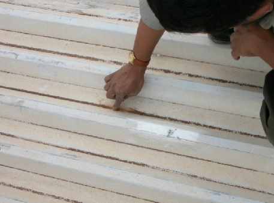
Climate-Shield® Rostkonverter stoppt bestehenden Rost, verhindert weitere Korrosion und bietet Schutz gegen Feuchtigkeitsdurchbruch mit einer Schutzbarriere. Das alles kann ohne Schleifen, Abtragen oder Sandstrahler erreicht werden. Climate-Shield® Rostkonverter ist eine auf Wasser basierende, äusserst hochqualitative und einzigartige Beschichtung.
Aussen- und Innengrundierung
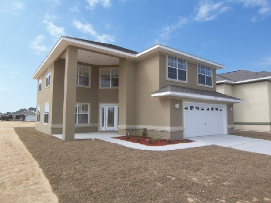
Climate-Shield® Aussen- und Innengrundierung wird zur Vorbereitung und Grundierung oder für zur Wiederherstellung von sehr wetterausgesetzten Oberflächen. Dieses Produkt ist mit Antischimmelmitteln versetzt und ist sehr sonnenresistent. Climate-Shield® Aussen- und Innengrundierung bleibt stets flexibel, atmungsaktiv und erlaubt der Feuchtigkeit des Raumes nach Aussen zu entweichen, ohne dabei die Feuchtigkeit von Aussen ins Innere zu lassen.
© 2014 Ser-Ba Grup All Rights Reserved. SER-BA GRUP İNŞ.MAK.TUR.İÇ VE DIŞ TİC.LTD.ŞTİ. Ümit Mahallesi, 2527.Sokak No:8 Ümitköy Yenimahalle/Ankara-Türkiye +90 312 230 50 07 +90 312 230 50 08
Kontakt: Herr Hakan Ersoy, Verteiler, Telefon: +90 534 433 36 69